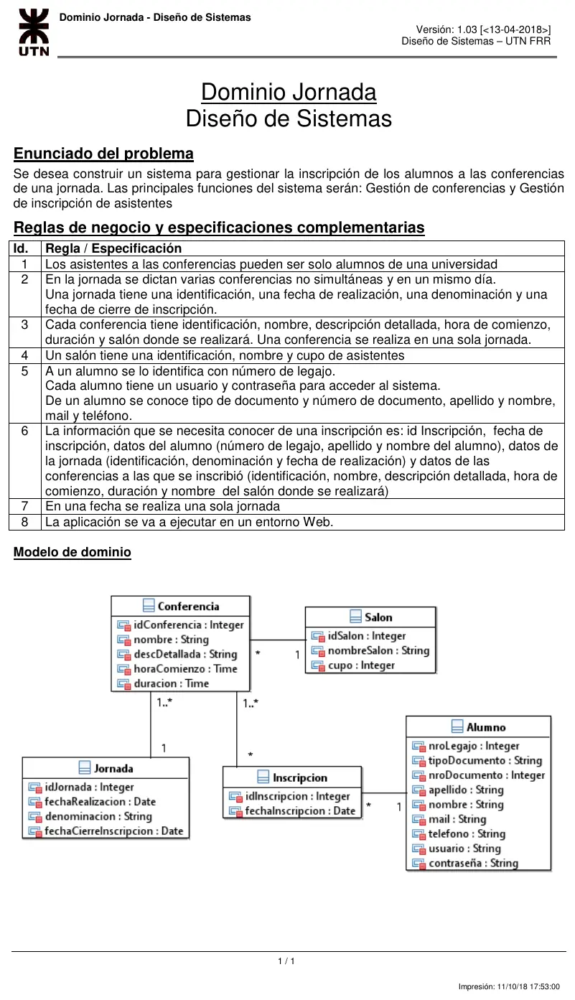
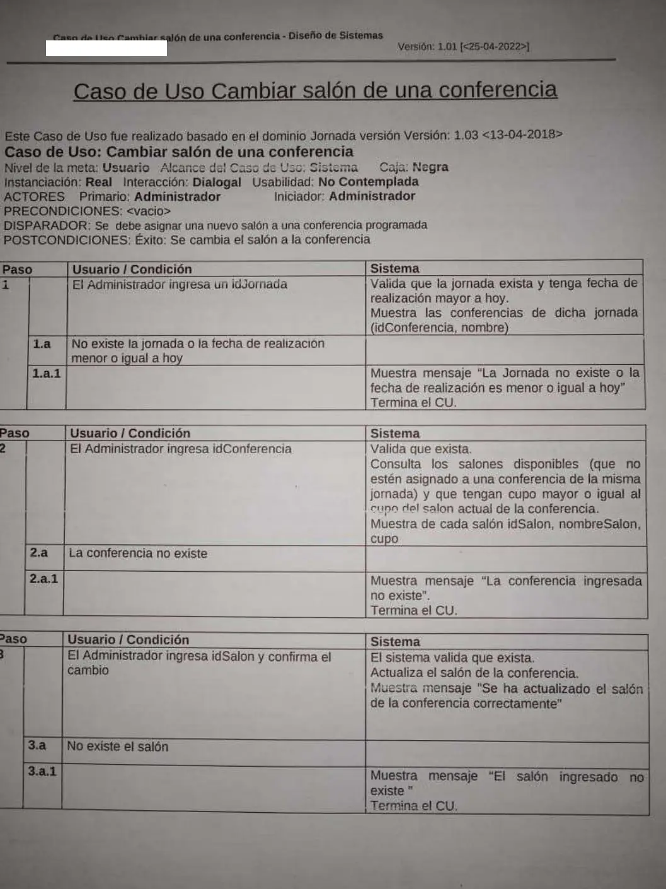

Final práctica, 25/04/2022: Jornada, Cambiar salón
Final, 25/04/2022
Enunciado




Propuesta de respuesta
Respuesta no verificada. La propuso Luta Studios con inteligencia artificial y ningún docente la revisó. Puede tener errores.
Un DSD por cada paso del caso de uso y el DCD, como piden las Políticas. La notación copia la de las soluciones de referencia del Drive, Pedido de repuestos y Pedido de juguete. La UI va sin caja de activación, el controlador guarda en variables de instancia lo que usa en otro paso, el create() va punteado y sin caja, y los retornos van entre «». Tocá cada dibujo para verlo en pantalla completa.
DSD 1. Paso 1, ingresar la jornada
DSD 2. Paso 2, ingresar la conferencia
DSD 3. Paso 3, ingresar el salón y confirmar
DCD
Por qué así
- Controlador.
ControladorCambiarSalonrecibe los tres eventos. GuardajActual, porque el paso 2 busca salones libres en esa jornada, ycActual, porque el paso 3 le cambia el salón. - DAO con JPQL. La jornada futura y los salones disponibles son consultas, y van en los DAO con su
@Query. Los salones libres son los que no tiene ninguna conferencia de la jornada, y con cupo mayor o igual al del salón actual. - Modificar y guardar. El salón nuevo se asigna con
setSalon, y la conferencia modificada se guarda con unsave, uno por objeto modificado. - Validaciones. Las de los pasos 2 y 3 van dentro del evento, con un
alty un retorno en la rama que corta.
Respuesta no verificada. Puede tener errores.
Se armó con el 1° parcial, «La práctica», con las reglas de las Políticas para el DSD, el DCD, los DAO y JPQL, y las soluciones de referencia de Pedido de repuestos y Pedido de juguete.
Quedó en duda: El paso 2 dice «valida que exista» y no si la conferencia tiene que ser de la jornada ingresada; acá basta con que exista. El paso 3 tampoco dice si el salón tiene que estar entre los disponibles que se mostraron. getOne devuelve nulo si no existe para poder validar; en Spring real conviene existsById o findById. Es de 2022, del plan viejo, con el mismo dominio que los parciales de 2024 en adelante. La notación sigue las soluciones de referencia de Pedido de repuestos y Pedido de juguete, que no dicen si son de la cátedra.
¿Cómo te fue?
Marcá cada tema del examen.
- DSDReglas para el DSD, en 1° parcial
- DCDReglas para el DCD, en 1° parcial